Main takeaway
There is an inherent tension between the political economy and economics of innovation policy. The politics of innovation reconciles such tensions.
Why should you worry about innovation policy and politics?
The Texas CHIPS Act
- Bipartisan bill
- UTD is part of the Texas Semiconductor Innovation Consortium (TSIC)
- $700m allocated!
The Texas CHIPS Act case discussion
Assume you are a member of the Texas legislature. Do you think it would be in your self interest to be allocating resources to semiconductor innovation?
Assume you are a (non-partisan) economist. Do you think it is an efficient allocation of resources for the Texas legislature to be spending $700m on semiconductor technology?
Do you think the political institutions in Texas are designed so that members of Texas legislature would allocate resources to semiconductors?
The 3 bigger puzzles
Puzzle 1: Assume you are a politician in a given institutional setup. Do you think it would be in your self interest to be allocating resources to innovation? Why?
Puzzle 2: Assume you are an economist. Do you think it is efficient for the government to be allocating resources to innovation? Why?
Puzzle 3: Are political institutions designed to be incentive-compatible with decisions towards allocation of resources to innovation? Why?
Putting the puzzle pieces together
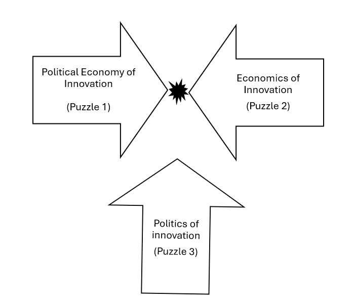
Claim 1
From an economic perspective, we can observe that innovation policy is cost-effective.
Consider an imaginary case…
CBO Director: "For every $10M spent on NIH funding, how many useful outputs to society?"
CBO Employee (You): 😕
Step 1: Understand the 3 main challenges to reckoning NIH funding impact
graph LR
A[NIH grant] --> |Causes| B[Number of Patents]
%% Define a class with specific styling
classDef nodeStyle fill:white,stroke:black,stroke-width:2px,color:black,font-size:30px;
class A,B nodeStyle;
- The attribution challenge: How to tie an NIH grant to a specific patent?
- The counterfactual challenge: What would've happened if NIH didn't make a specific grant?
- The endogeneity challenge: What if grant was given anticipating ease of patentability?
Step 2: Scratch your “Shoe leather” to go and talk to scientists
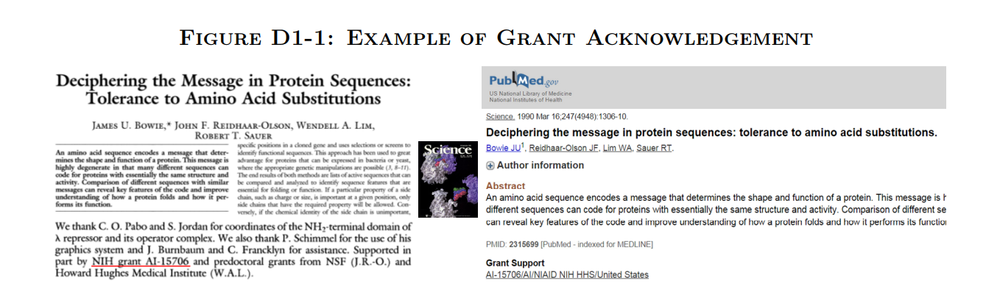
Step 3: Solve the attribution
challenge
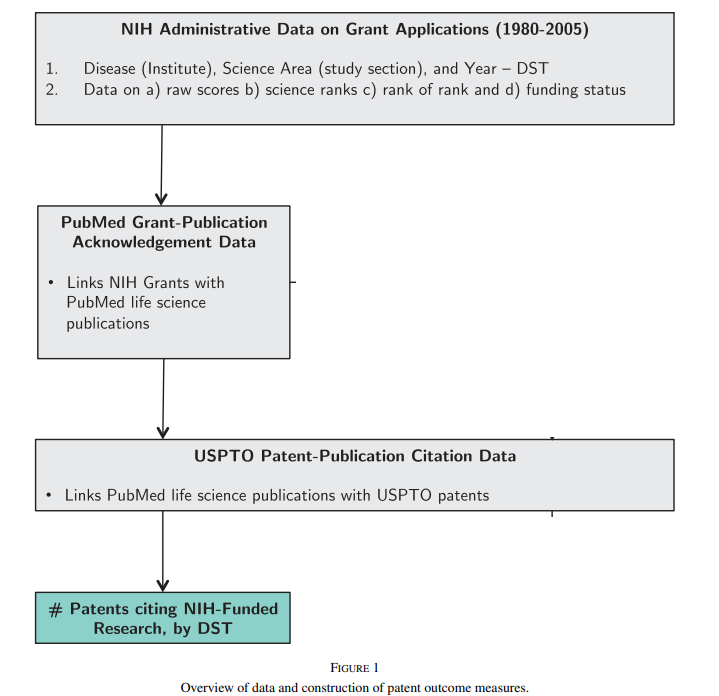
Step 4: Solve the counterfactual challenge
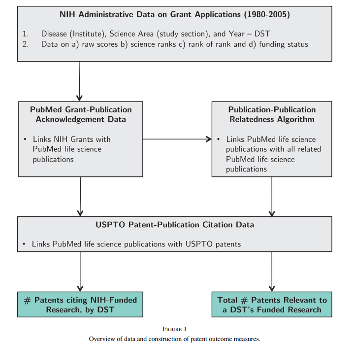
$$\begin{align*}
Patents_{\widetilde{dst}} = \alpha_0 + \alpha_1Funding_{dst} + \beta' X_{dst} +& \\
\delta_{ds} + \gamma_{dt} + \nu_{st} + \epsilon_{dst}&
\end{align*}$$
graph LR
A[NIH grant] --> |Causes| B[Number of Patents]
%% Define a class with specific styling
classDef nodeStyle fill:white,stroke:black,stroke-width:2px,color:black,font-size:20px;
class A,B nodeStyle;
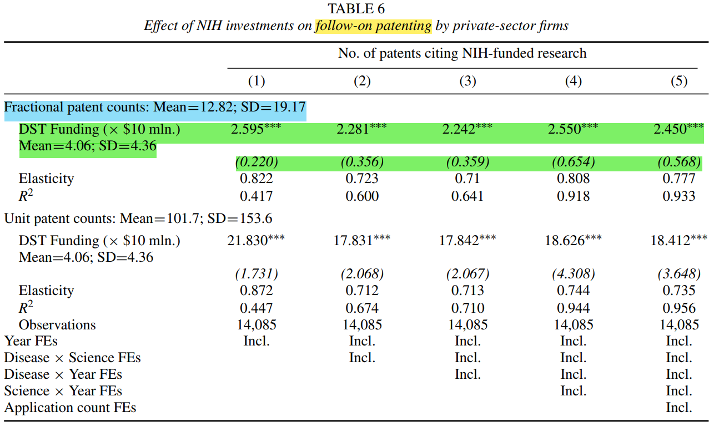
graph LR
A[NIH grant] --> |Causes| B[Number of Patents]
%% Define a class with specific styling
classDef nodeStyle fill:white,stroke:black,stroke-width:2px,color:black,font-size:20px;
class A,B nodeStyle;
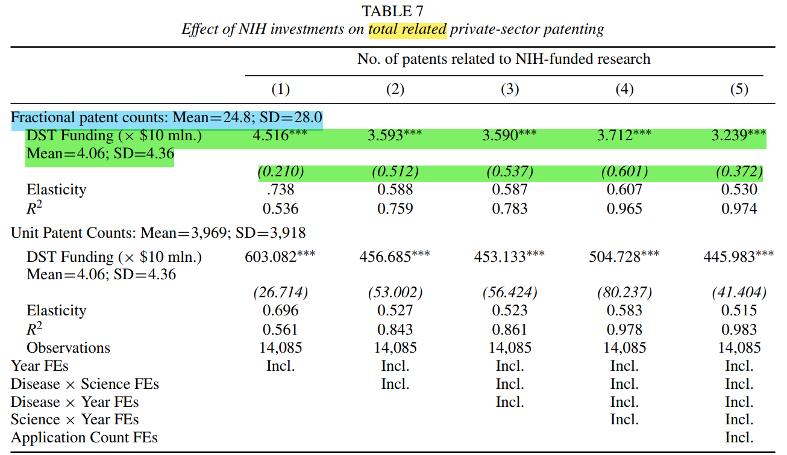
Step 6: Scratch your “Shoe leather”, again, to go and talk to NIH admins
Grant assessment at a study section level
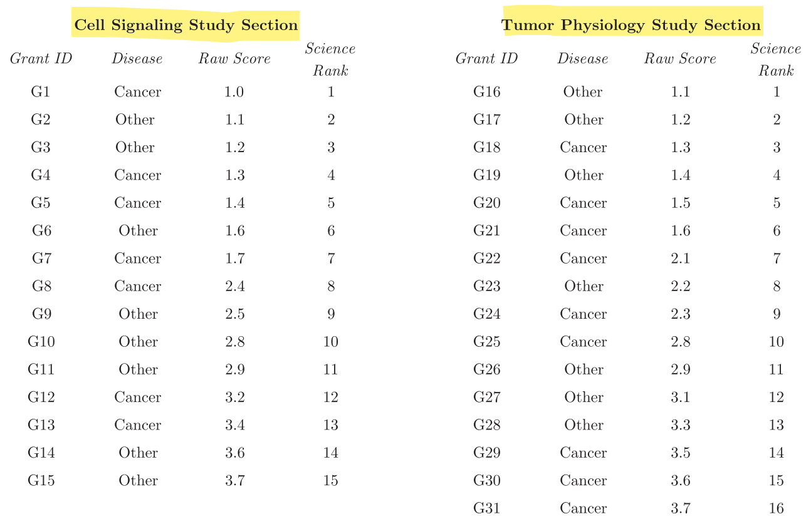
Step 6: Scratch your “Shoe leather”, again, to go and talk to NIH admins
Grant assessment at a disease institute level
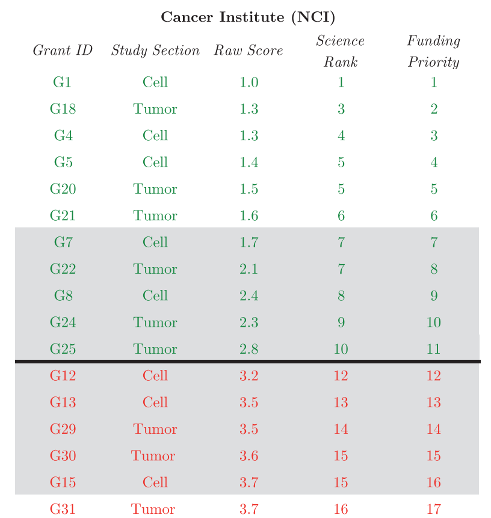
Compute Windfall funding (Instrument)
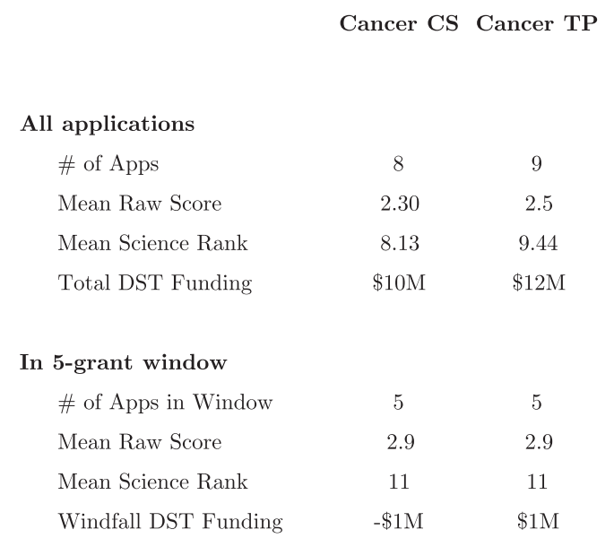
Step 7: Solving the endogeneity challenge
graph LR
D[Windfall funding] --> |☑️| A[NIH grant]
subgraph X[" "]
direction LR
A[NIH grant] --> |✅| B[Number of Patents]
end
C[Commercial potential] --> |❌| B[Number of Patents]
C[Commercial potential] --> |❌| A[NIH grant]
%% Define a class with specific styling
classDef nodeStyle fill:white,stroke:black,stroke-width:2px,color:black,font-size:20px;
class A,B,C,D nodeStyle;
\begin{align*}
Patents_{\widetilde{dst}} = &\alpha_0 + \alpha_1Funding_{dst} + \Upsilon (\#Applications_{dst})& \\
&+ \Phi(RawScores_{dst}) + \Psi(ScienceRanks_{dst})& \\
&+ \delta_{ds} + \gamma_{dt} + \nu_{st} + \epsilon_{dst} &
\end{align*}
\begin{align*}
WindfallFunding_{dst} = &Funding_{dst}^{\mathbf{W}_dt} + E[Funding_{dst}^{\mathbf{W}_dt}]
\end{align*}
Step 8: Give your boss the final results
graph LR
D[Windfall funding] --> |☑️| A[NIH grant]
subgraph X[" "]
direction LR
A[NIH grant] --> |✅| B[Number of Patents]
end
%% Define a class with specific styling
classDef nodeStyle fill:white,stroke:black,stroke-width:2px,color:black,font-size:20px;
class A,B,D nodeStyle;
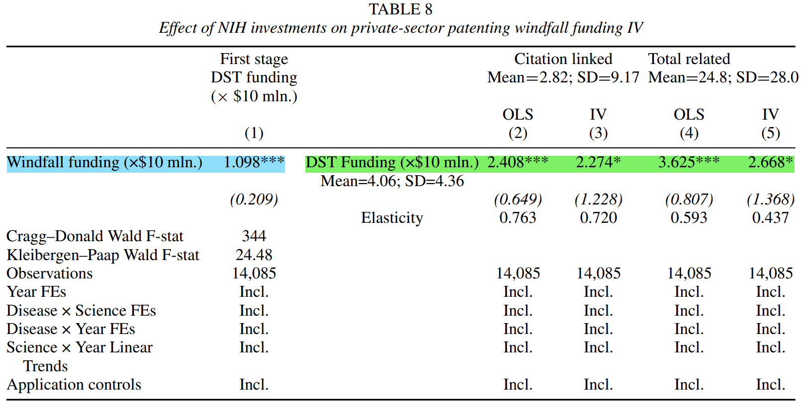
Back to the point - Claim 1
CBO Director: "For every $10M spent on NIH funding, how many useful outputs to society?"
CBO Employee (You):
2.7 patents ✅
From an economic perspective, we can observe that innovation policy is cost-effective.
Claim 2
There are clear political-economic reasons to believe that politicians will NOT be incentivized to allocate resources to innovation.
In this section:
- "Is this idea clear?" ✅
- "Is this idea correct?" ❌
Players, Utilities, and Strategies
- Players: Citizens, Incumbent ruler, New ruler
- Discrete time: $t$
- Everyone's utility depends on a single good: $y_t=A_t$
- Strategies:
- Incumbent ruler: $x_t \in \{0 ,1 \}; T$
- New ruler: $\widehat{x_t} \in \{0,1\}; \widehat{T} $
- Citizens: $p_t \in \{0,1\}$
Timing
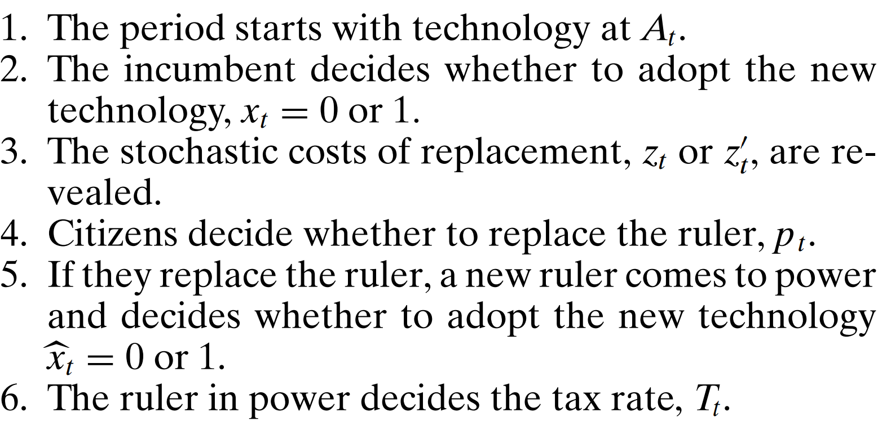
| $x_t$ |
$p_t$ |
$\widehat{x_t}$ |
$y_t=A_t=...$ |
| 0 |
0 |
- |
$A_{t-1}$ |
| 1 |
0 |
- |
$A_{t-1}\left[ \alpha \right]$ |
| 0 |
1 |
0 |
$A_{t-1}\left[ 1-z \right]$ |
| 0 |
1 |
1 |
$A_{t-1}\left[ \alpha - z \right]$ |
| 1 |
1 |
0 |
$A_{t-1}\left[ 1 - z' \right]$ |
| 1 |
1 |
1 |
$A_{t-1}\left[ \alpha - z' \right]$ |
Cost of removing the incumbent ($z, z’$) and political competition ($\mu$)
$$ \begin{align*}
&z' \sim F^I \equiv \mathcal{U}\left( \mu - \frac{1}{2}, \mu + \frac{1}{2}\right) \\
&z \sim F^N \equiv\mathcal{U}\left( \gamma\mu - \frac{1}{2}, \gamma\mu + \frac{1}{2}\right) \\
&\text{where } \gamma \geq 1
\end{align*}$$
Incentives to block innovation and political competition ($\mu$)
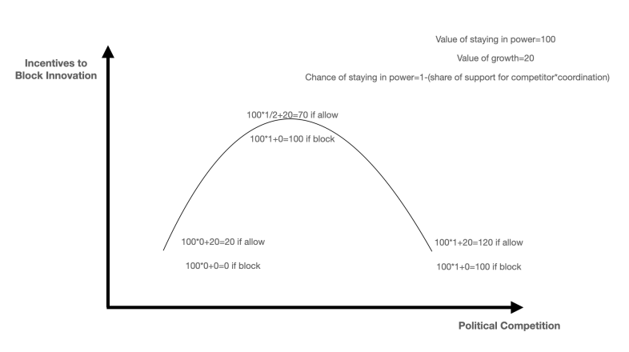
Modifications to the model
- Political rents and human capital
- External threats (i.e.) a war with a more/less developed nation
More pessimism!
- Delayed payoffs to innovation
- Opportunity cost of innovation policy
Claim 3
Yet we observe politicians allocating resources to innovation for political reasons.
3 reasons why politicians invest in R&D
- Reason 1: Politicians can signal competence with risky innovation projects.
- Reason 2: Politicians can channel benefits of innovation to connections.
- Reason 3: Politicians can extract rents by creating a "lemons" market of patents.
Reason 1: Politicians can signal competence with risky innovation projects.
Competence signaling game
- Players: Incumbent, (Median) Voter
- Incumbent types: Competent or Incompetent
- Strategies:
- Incumbent: Investment in safe project v R&D project
- Voter: Reelect Incumbent v Not reelect
- Utilities:
- Incumbent: $\text{ROI} + \text{Value of holding office}$
- Voter: $\text{ROI} + \text{Value from leader's competence}$
- If not reelect, $\text{Prior on Value from leader's competence }$
The competence signaling game - Sequence
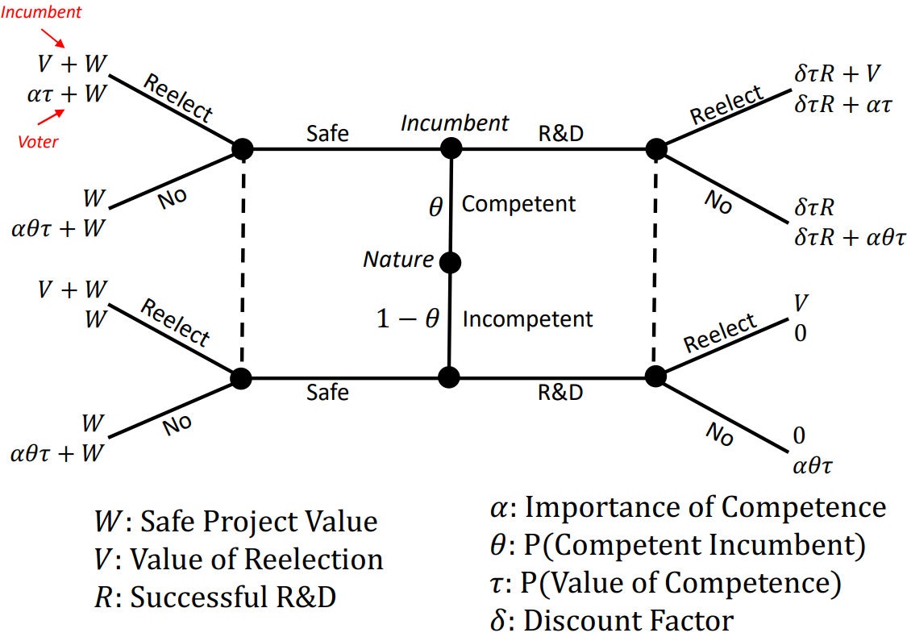
The competence signaling game - Making sense of the utilities
The competence signaling game - Separating equilibrium
$$\delta \tau R \geq W \geq V \implies$$
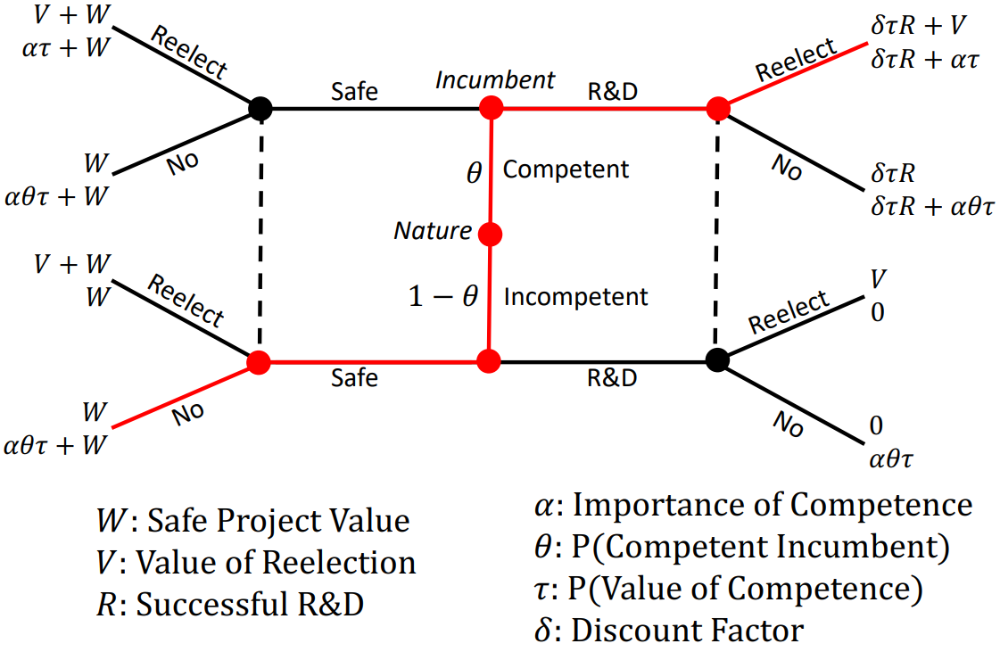
The competence signaling game - Pooling equilibrium
$$V > W \,\, \& \,\, \delta \tau R > W \implies$$
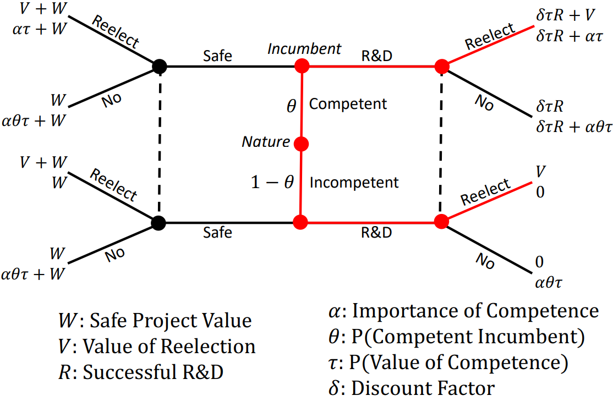
Back to statistical “Shoe leather”
Vignette survey experiment
Vignette survey experiment
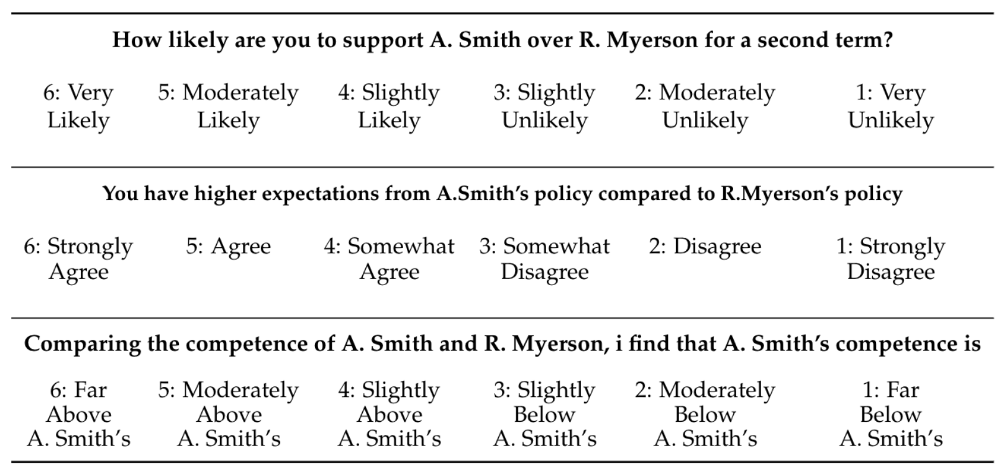
Results of the survey
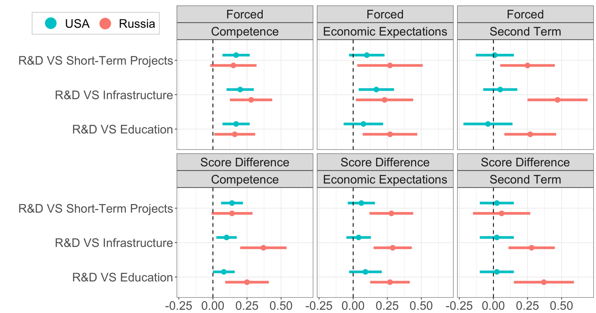
Reason 2: Politicians can channel benefits of innovation to connections.
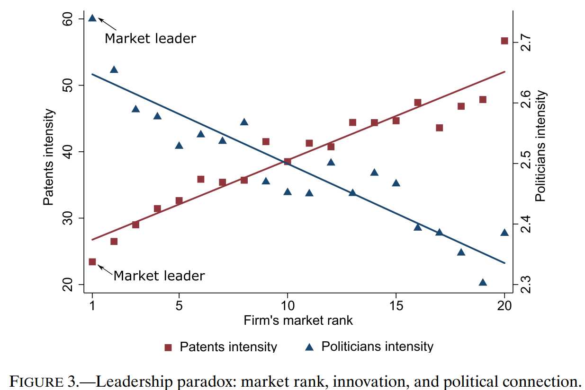
- What happens to the market when the low competence incumbent invests in R\&D in the pooling equilibrium of the competence signaling game?
- We get lemons (i.e) a market filled with bad quality patents!
- Reference to George Akerlof
Conclusion - Same story everywhere!
Key takeaways from today’s class
💡Main Takeaway
There is an inherent tension between the political economy and economics of innovation policy. The politics of innovation reconciles such tensions.
- Claim 1: From an economic perspective, we can observe that innovation policy is cost-effective.
- Claim 2: There are clear political-economic reasons to believe that politicians will NOT be incentivized to allocate resources to innovation.
- Claim 3: Yet we observe politicians allocating resources to innovation for political reasons.
Week 9: Innovation Policy and Innovation Politics
Venkatesh “Venki” Subramanian
Teaching Assistant
Oct 16, 2024
For IPEC 4305: Topics in Science, Technology and Institutions: From Writing to Cryptocurrency
Thank you! 🙏🏾